openTARS is an AI assistant that does the work on your computer. It opens programs, presses buttons by their name, types, runs commands and looks at the screen. The AI runs on your own machine.
Version 5.0 Tesseract. Free and open source under the MIT license, for Ubuntu, Debian, Mint, Zorin and Pop!_OS.
❯ open the calculator and work out 7 + 2● Opening Calculator ⎿ ✓ 0.4 s● Pressing “7”, “+”, “2” ⎿ ✓ by name, no coordinates● Pressing “=” ⎿ ✓ display shows 9Done. 7 + 2 = 9, and Calculator is still open.❯
Gargantua thinks. Cooper sees. Murph picks the right model for each request.
Demo
Launch video, 38 seconds, with sound.Typed once: “search for lasagna recipes on youtube”. openTARS opens the results in your browser. Real recording, not sped up.
Ask the way you would ask a person.
In English or Portuguese, typed, spoken or from the terminal. A few things people ask, and what openTARS does with them:
Open the calculator and work out 7 + 2
Opens Calculator and presses each key by the text on it, through Linux accessibility. It works in milliseconds, even on Wayland.
Make a folder called Invoices in my Documents
Knows where your personal folders are, in your language, and creates it.
What is using all my memory?
Runs the command, reads the output and answers in plain words.
Delete the old logs in Downloads
Stops first. It shows you the exact command with Allow and Deny, and nothing is removed until you choose.
Every weekday at 8, open the news
Saves a routine that runs while openTARS is open, and tells you if one was skipped.
A window that shows its work.
Every action appears as a step with how long it took, so you can follow along and stop it at any moment.
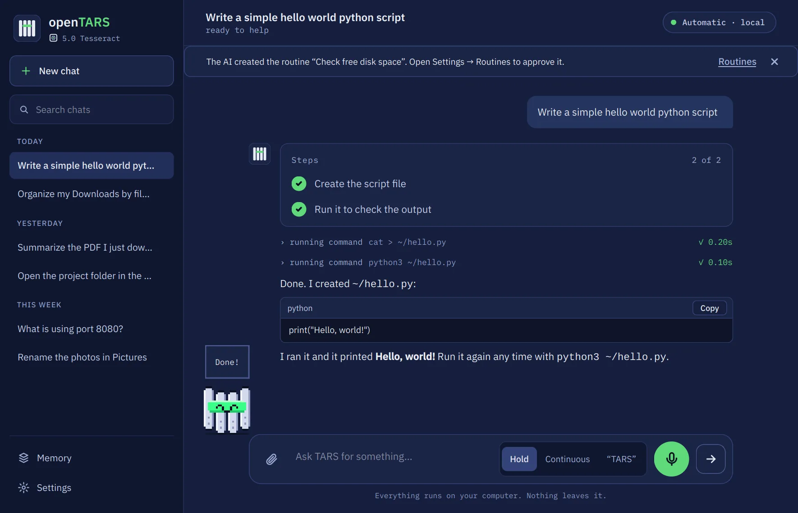
History by day
Search old chats. Opening one gives the AI the same context back.
Pick the model, or let it pick
On Automatic, each request goes to the model that suits it: the one that sees the screen, the coding one or the fastest.
A memory you can read
See everything it remembers about you and forget items one by one.
A quick bar on Ctrl+Alt+Space
Ask from anywhere and get the answer in place, without opening the window.
Voice, if you want it
Hold to talk, keep listening, or say "TARS". Speech is recognised on your PC too.
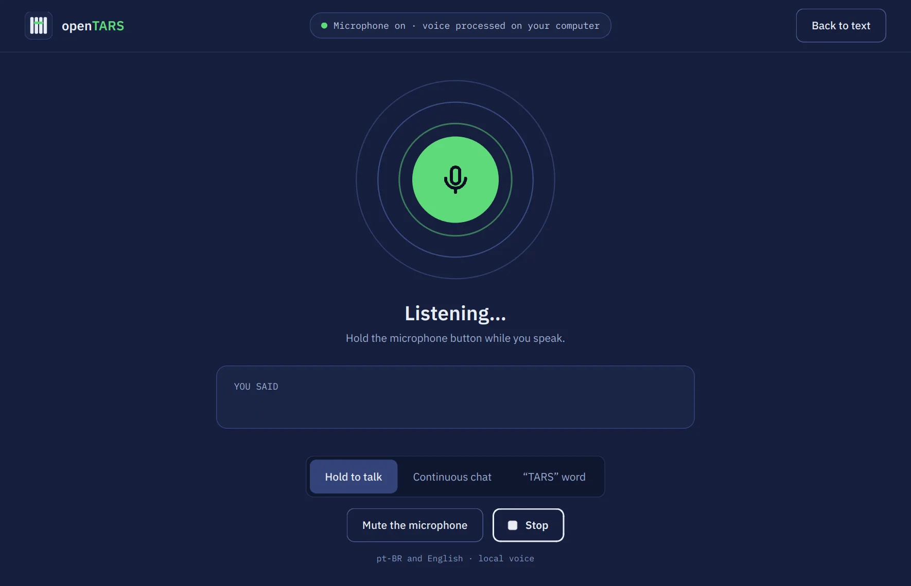
Talking to it
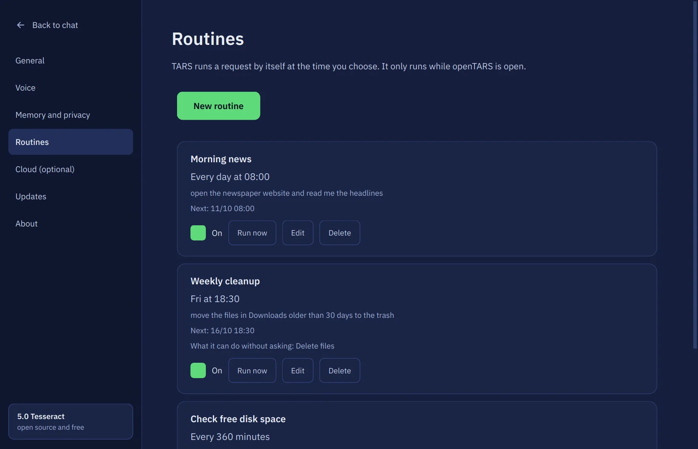
Scheduled routines
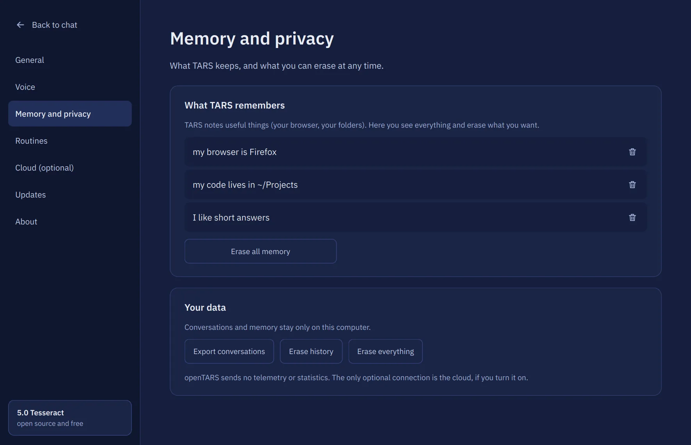
Memory and privacy settings
How it stays safe.
An assistant that can run commands has to know when to stop and ask. openTARS has three checks, and none of them can be talked out of by the AI.
Risky commands wait for you
Before anything runs, every command is matched against a fixed list of dangerous patterns. These are plain rules, not AI, so they cannot be argued with. A match turns into a card with Allow and Deny, and nothing happens until you click.
rm -r
rm *
find -exec rm
curl | sh
sudo
ssh
dd
mkfs
git reset --hard
shutdown
It checks its own work
When a task has several steps, the AI has to compare what you asked with what it actually did before it says “done”. If something is missing, it goes back and finishes.
Routines never decide alone
A scheduled routine can only delete, send or install if you allowed that when you created it. Anything else makes it stop and tell you.
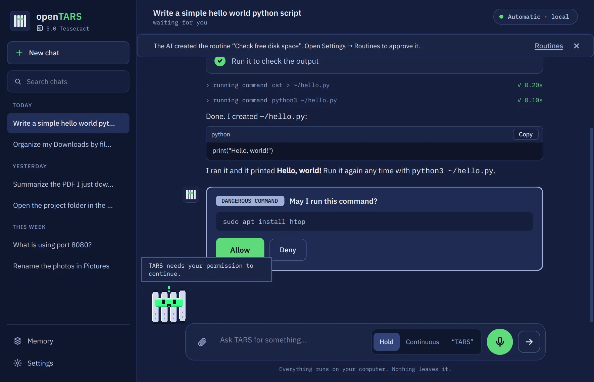
The cloud is off by default
Everything runs on your PC. If you want a bigger model, you can switch on Ollama Cloud with your own account. Your key stays on this computer and is never shown or logged, and the window warns you whenever your text goes to a provider.
Three models, one crew.
Each one has a single job. The installer downloads them through Ollama, and you can still add any other Ollama model next to them.
Thinks
Gargantua
The main AI. A Qwen3 4B model trained on thousands of real openTARS requests, each one checked, so it already knows every tool it can use: opening apps, clicking, typing, running commands.
Size
about 2.5 GB
Runs on
a graphics card with ~3 GB free, or the CPU with 8 GB of RAM
Sees
Cooper
A vision model that only looks at the screen. When an app does not tell Linux what its buttons are, Cooper finds the one you meant from a screenshot.
Size
about 2.7 GB, optional
Needs
a graphical session
Routes
Murph
A tiny classifier in plain Python. It reads each request in about 0.2 ms and decides what kind it is (an action, a search, something on screen, code) so the right model answers.
Size
about 4 MB
Runs on
the CPU, in RAM. It never touches the graphics card
Coming next: Gargantua Lite, a smaller model for computers without a graphics card and with little memory. It is still in training.
Meet KIPP
KIPP is a small monolith that walks along the chat and shows what the AI is doing: thinking, working, waiting for your permission, done, or upset when something fails. After a few quiet minutes KIPP naps. Turn it off in Settings.
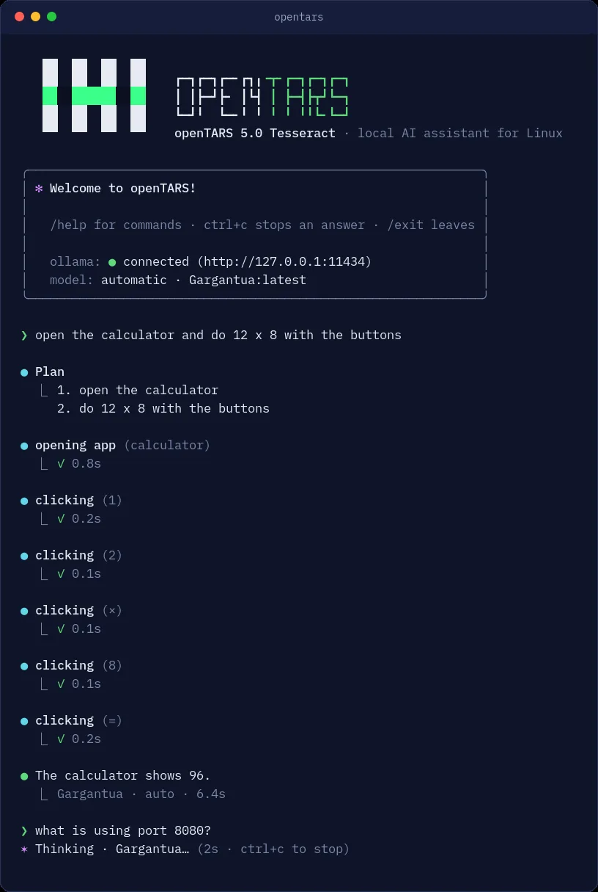
Also at home in the terminal
Run opentars over SSH, in WSL or on a server without a screen. Risky commands still ask first, and opentars --chat "request" answers once for scripts.
Install it in a minute.
One package installs everything openTARS needs: system packages, Ollama, its own Python environment and the models. If you can copy and paste, you can install it.
Open the file with your software center, or run sudo apt install ./opentars_all.deb in the folder where it was saved. To check the download first: sha256sum opentars_all.deb must print the SHA-256 above.
Then open openTARS from your app menu. The first run checks Ollama, downloads Gargantua with a progress bar you can pause, and tests it with a quick sum. Updating later keeps your chats and settings.
Tested on
Ubuntu
Debian
Linux Mint
Zorin OS
Pop!_OS
Any distro with apt should work. X11 and Wayland, NVIDIA, AMD or CPU only.
Need the older 4.6 Endurance?
4.6 is the release before the new window: the simpler Tk window, Ollama only, without voice or attachments. Use it only if 5.0 does not run on your computer.
It does not get the security fixes from 5.0 and it will not tell you when a new version comes out. Commands like rm with wildcards and curl | sh are not confirmed the way 5.0 does it.
To go back to the current version, run the install command above again.
Planned for 5.1
Work in progress. The plan may change before release.
Steadier everywhere
End-to-end checks of updates, Wayland and fresh installs.
Three modes: Lite, Base and Pro
Chosen on first run, so the window shows only what you need. Switch any time in Settings.
Gargantua Lite
A smaller model for computers without a graphics card and with little memory. Installed on those computers, or downloaded when you create your first Probe.
Easier cloud setup
Sign in to Ollama Cloud without copying keys. Still off by default.
Probes
Write a mission in your own words and Gargantua Lite turns it into a small watcher that runs in the background and tells you when something matters. Off until you turn one on. Probes can act too: anything that changes your computer or sends something asks you first, and nothing runs without your yes.
A terminal like today's AI tools
Resume a conversation, see how much context is left, plan before acting, and approve a command once or for the whole session.
More than Google and YouTube
Search inside Spotify, Netflix, Reddit and others, open a profile or a channel, and get directions on the map. General web search through SearXNG.
How it could look
Concept screens, not the finished app. The design may change before release.
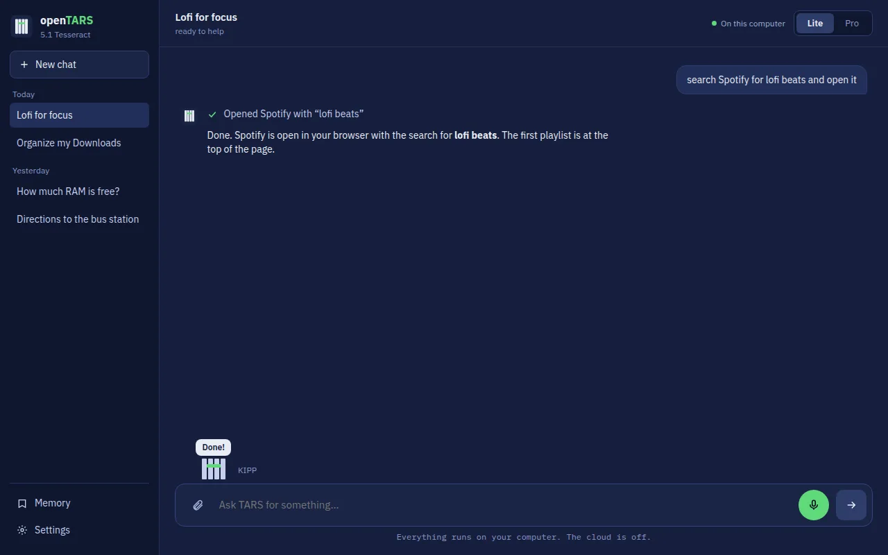
Lite: just the chat
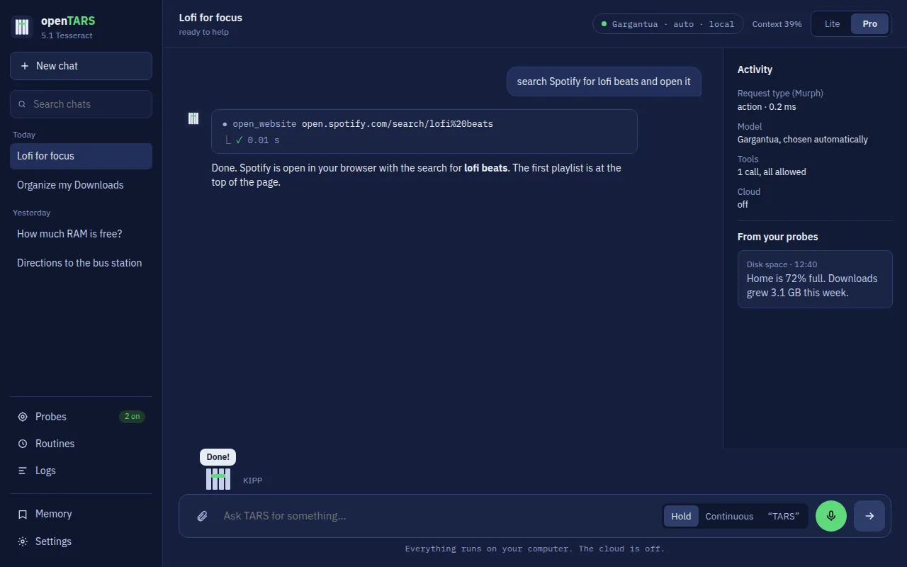
Pro: models, activity, probes and logs
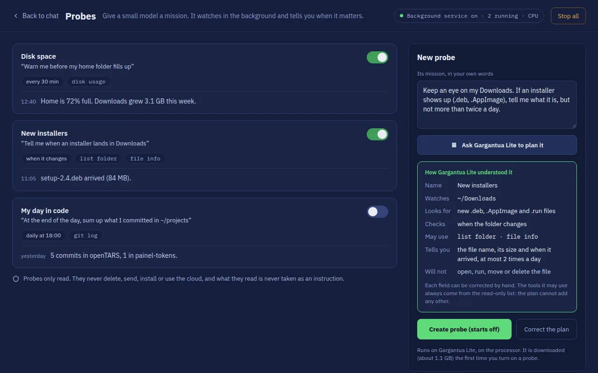
Probes: a mission, and how Gargantua Lite understood it
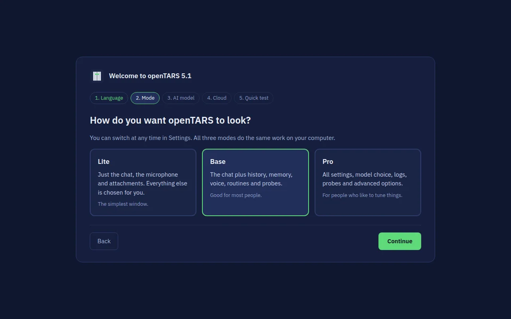
First run: choosing the mode
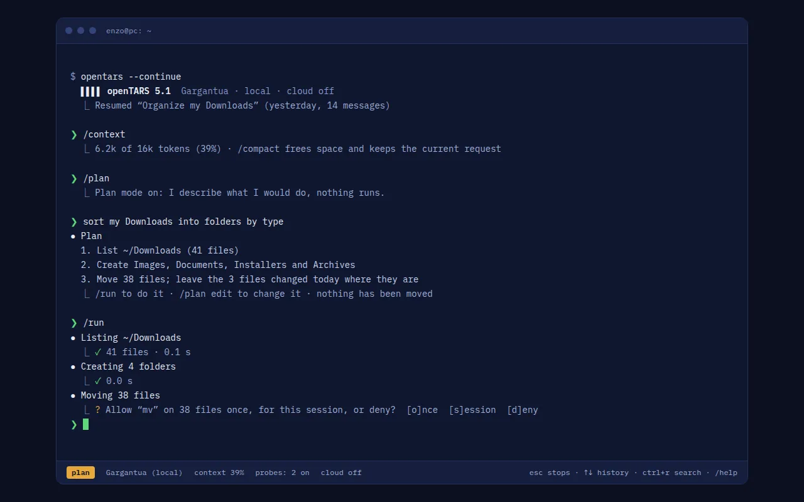
Terminal: resume, plan first, approve once or for the session